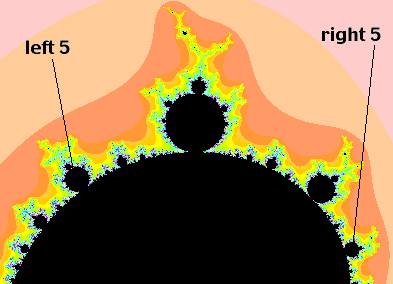
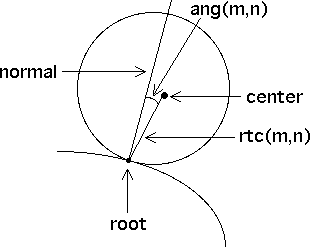
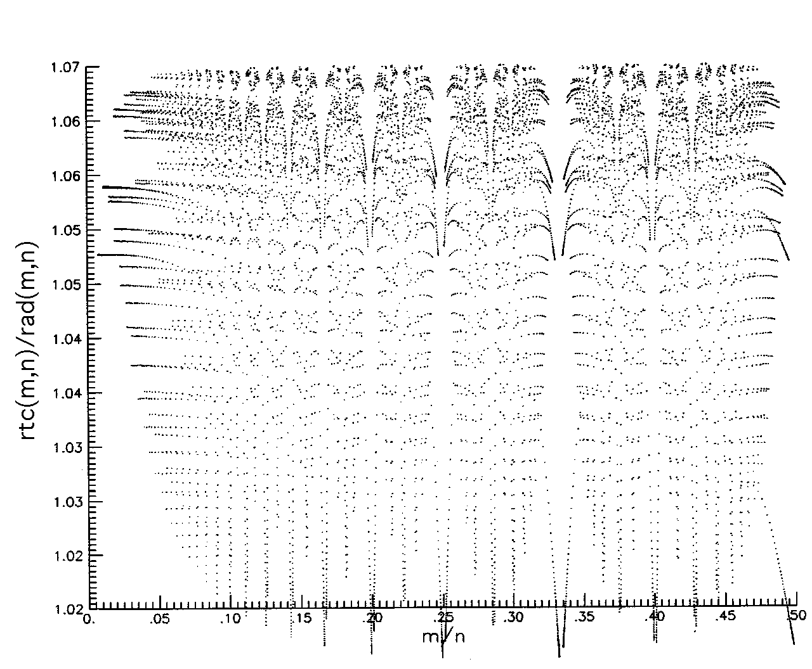
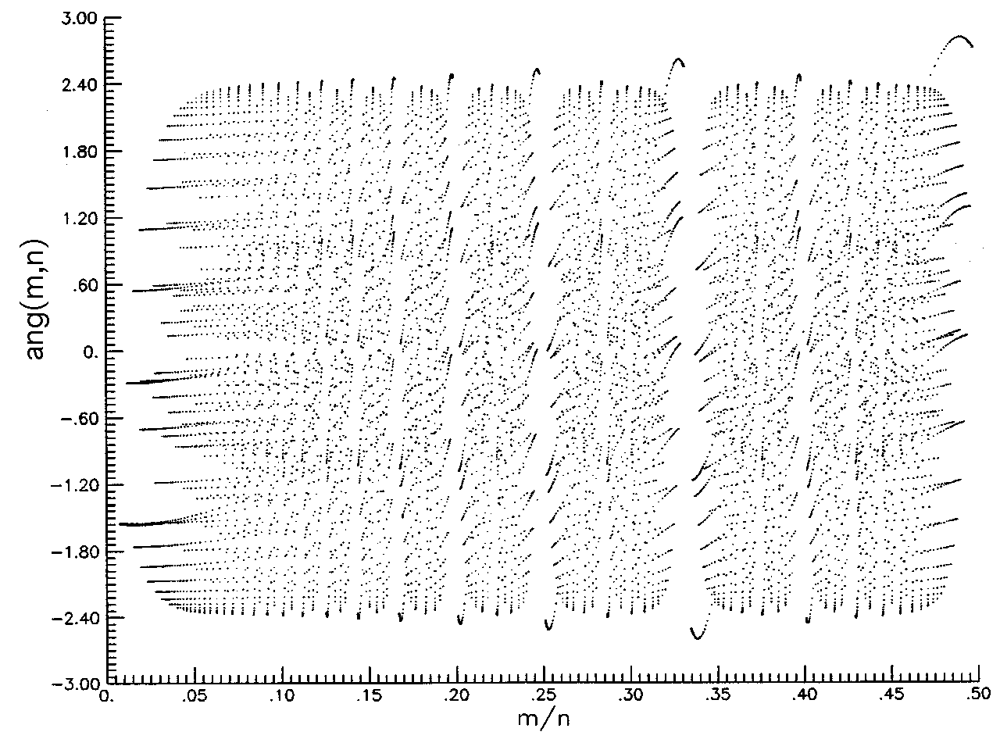

|
| The most obvious relation between the length of a cycle and the size of a disc having that cycle is |
| the longer the period, the smaller the disc |
| Mandelbrot conjectured that the disc associated with an n-cycle has radius approximately 1/n2. |
| Even a slightly closer inspecton reveals a departure from this rule: the left
5-cycle disc is larger than the right 5-cycle disc. To give a more precise
formulation of the rule, we introduce the internal angles
of the main cardioid. Then the |
| the disc attached at internal angle m/n has radius approximately |
|  |
| The approximation was proved by Guckenheimer and McGehee. Mandelbrot commented that the deviations from this rule appear to quite intricate. Many years ago, L. Kerry Mitchell and I did some numerical investigations of these departures. |
| First, we must answer the question, "What do we mean by the radius of these discs?" because only
the 2-cycle disc is a true disc. The multiplier provides
an answer. By the center of a disc we mean the point c where the
multiplier is 0; that is, |
| For comparison we considered also |
|  |
| Here is a plot of the ratio |
| Note each of these regions appears to be divided into subregions similar to further distorted versions of the whole plot. |
|  |
| Here is a plot of the angle ang(m,n) for the same 10000 discs. As with the plots of
|
|  |
Return to Combinatorics in the Mandelbrot Set.
{kind=link}
{kind=link}